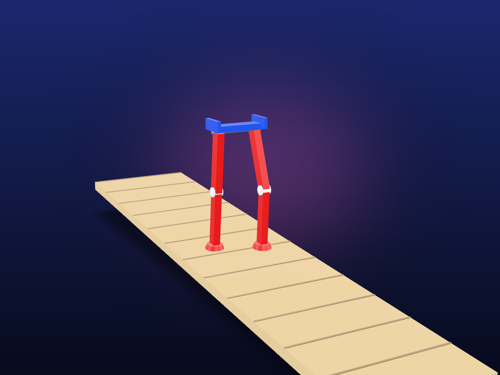

The XTI passive dynamic walker runs on gravity, geometry and resonance. Put it in your room, then take its physics apart.

Opens Apple AR Quick Look. Point at the floor or a table and the walker steps down a 3° ramp at real size. Nothing to install.
AR Quick Look needs an iPhone or iPad (Safari). On Android or a computer, use the 3D viewer below; ARCore phones get an AR button inside it.
If the main button doesn't animate on your phone, try Backup B. Backup C is a still model.
Numbers come from the app's compass-gait model of a passive walker. The swing leg acts like a pendulum, so the gait settles at the leg's natural frequency. That self-tuning rhythm is what we mean by auto-resonance.
Chance Robotics and Mirai Productions LLC (Pensacola, FL). Built by David Michael Patchanian Jr., Johnny Corey Godowski and Stefan Thompson.
Our vision: robotics for humanity's harmony with all of creation, not its destruction. Proposed first pilot: graduate students at the University of West Florida.